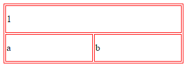

Table(Tablo) Kütüphanesi
Table(Tablo) nesnelerini kullanmak üzere geliştirilmiş bileşendir.
| Table(Tablo) Kütüphanesini ve Yöntemleri |
|---|
Table(Tablo) Kütüphanesi Yöntemleri
Table(Tablo) kütüphanesine ait yöntemler aşağıdaki tabloda listelenmiştir
| Table(Tablo) Oluşturma Yöntemleri | Anlamları |
|---|---|
|
Tablo hücrelerinin bir birine olan konumu ayarlamak için kullanılır. 1. parametre cellspacing, 2. parametre cellpadding değerlerini ayarlamak içindir. Örnek: ->cell(5, 5) |
|
| Tablo hücrelerinin sadece cellspacing özelliğini ayarlamak için kullanılır. Örnek: ->cellSpacing(5) | |
| Tablo hücrelerinin sadece cellpadding özelliğini ayarlamak için kullanılır. Örnek: ->cellPadding(5) | |
| Tablo çerçevesinin kalınlığını ve rengini ayarlamak için kullanılır. Örnek: ->border(5, '#000') | |
| Tablo çerçevesinin kalınlığını ayarlamak için kullanılır. Örnek: ->borderSize(5) | |
| Tablo çerçevesinin rengini ayarlamak için kullanılır. Örnek: ->borderColor('red') | |
| Tablo içeriğini hizalamak için kullanılır. Örnek: ->align('center') | |
| Tablo genişliğini ayarlamak için kullanılır. Örnek: ->width(300) | |
| Tablo yüksekliğini ayarlamak için kullanılır. Örnek: ->height(100) | |
| Tablo genişliğini ve yüksekliğini ayarlamak için kullanılır. Örnek: ->size(300, 100) | |
| Tablo arkplanını ayarlamak için kullanılır. Örnek: ->background('http://www.ornek.xxx/resim.jpg') | |
| Tablo arkplan rengini ayarlamak için kullanılır. Örnek: ->bgColor('blue') | |
| Farklı bir özellik değer eklenmek istenirse bu yöntem kullanılabilir. Html nesnelerindeki ozellik="deger" yapısını oluşturmak içindir. Örnek: ->attr(array('name' => 'resim')) | |
| Tabloya stil eklemek için kullanılır. Örnek: ->style(array('color' => 'red', 'border' => 'solid 1px #000')) | |
| Tabloya class="sinif1, sinif2" tipinde özellik ve değer çifti eklemek için kullanılır. Örnek: ->css('sinif1, sinif2') | |
| Tablo içeriğini oluşturmak için kullanılır. Örnek: ->content(array(1,2,3,4,5), array(a,b,c,d,e)) | |
| Tabloyu oluşturmak için kullanılan nihai yöntemdir. Örnek: ->create(); |
Yukarıdaki yöntemlerin kullanımına yönelik örnekler aşağıda verilmiştir.
// Tablo genişliği 300, yüksekliği 100 olarak ayarlanıyor. echo Table::size(300 ,100 )// Hücreler arası boşluk 0 olarak ayarlanıyor. ->cell(0 ,0 )// Çerçeve kalınlığı 1 ve rengi kırmızı olarak ayarlanıyor. ->border(1 ,'red' ) ->content (// 1. Sütun, 2. Sütun ... N. Sütun array (1 =>array ('colspan' =>2 )),// 1. Satır array ('a' ,'b' )// 2. Satır // ... // N. Satır ) ->create();

Yukarıda kodların çıktısı olan tablo görüntüsü yer almaktadır. Gerekli css veya stil kodları kullanılarak çok daha güzel tablolar oluşturabilirsiniz.